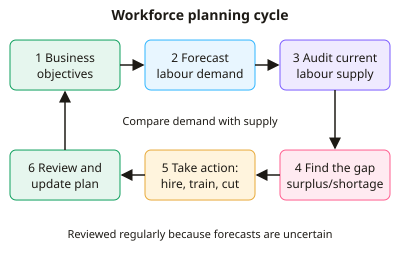

A-level Business Year 12 · Topic 9
Human resource management
This topic covers human resource management, getting the right people with the right skills, and keeping them motivated.
We plan the workforce, measure HR performance, recruit and train staff, and design the organisation.
Then we compare motivation theories and methods, and look at how employers and employees work together.
- 8 subtopics
- 334 questions
- Free: 9.1 notes and 10 questions
In this topic
- 9.1HR objectives, the role of HR and workforce planningFree below · 67 questions
- 9.2Measuring HR performance: labour turnover, retention, absenteeism and labour productivity (with calculations)Open in Full Marks · 53 questions
- 9.3Recruitment and selection: internal and external methods, job descriptions and person specificationsOpen in Full Marks · 22 questions
- 9.4Training, development and appraisalOpen in Full Marks · 26 questions
- 9.5Organisational design: structures, span of control, delegation, centralisation, and flexible workforcesOpen in Full Marks · 77 questions
- 9.6Motivation theories: Taylor, Mayo, Maslow and HerzbergOpen in Full Marks · 26 questions
- 9.7Motivation in practice: financial and non-financial methodsOpen in Full Marks · 31 questions
- 9.8Employer-employee relations: trade unions, works councils, employee participation and communicationOpen in Full Marks · 32 questions
9.1 · Free notes
HR objectives, the role of HR and workforce planning

Key points
- HR objectives support the corporate objectives: the aim is the right number of employees, with the right skills, in the right place, at the right time and at an acceptable cost.
- Typical HR objectives are to raise labour productivity, cut labour turnover and absenteeism, improve motivation and engagement, develop skills, and ensure legal compliance (e.g. Equality Act 2010, health and safety).
- The role of HR covers workforce planning, recruitment and selection, training and development, performance management, pay and reward, employee relations, and managing dismissal and redundancy.
- Workforce planning (HR planning) means forecasting future labour demand and supply and deciding how to close any gap. The result is a workforce plan.
- A workforce audit is the starting point. It records the current numbers, skills, qualifications, ages and flexibility of staff, so the firm knows its labour supply.
- Internal factors include objectives, sales forecasts, new products or technology, budgets and labour turnover. External factors include unemployment, competitors' pay, demographics, legislation and technological change.
- Required recruits = staff needed − (current staff − expected leavers). For example, 120 needed, 100 employed and 10 leaving means 30 must be recruited.
- A labour shortage can be closed by recruitment, training or retraining, overtime, outsourcing or temporary staff. A labour surplus can be reduced by natural wastage, a recruitment freeze, redeployment, or voluntary then compulsory redundancy.
- A flexible workforce (part-time, temporary, zero-hours, freelance, outsourced staff, flexitime) cuts fixed labour costs and copes with demand changes. It can reduce loyalty, firm-specific skills and training investment.
- Evaluation: workforce planning avoids over- and under-staffing and controls costs, but forecasts are uncertain (economy, competitors, technology) and planning takes time and money. Some firms use hard HRM (staff as a cost); others use soft HRM (staff as an asset).
In more detail
- Worked workforce plan: a firm needs 250 staff next year, has 230 now and expects 8% labour turnover (about 18 leavers), so it must recruit about 38.
- Skills gap: a factory moving to automation may need fewer assembly workers but more technicians, so retraining may beat redundancy plus recruitment.
- Hard vs soft HRM: hard HRM treats staff as a cost to be minimised and closely controlled, while soft HRM treats them as a valuable asset to develop and involve.
- Workforce audit finding: an audit might reveal that 30% of a firm's engineers will retire within five years, so it must start apprenticeships now.
Practice
HR objectives, the role of HR and workforce planning: 10 questions
Pick an answer to check it, or open the answer for the explanation.
1. Which is the best example of an HR objective?
- Maximise the number of people employed
- Increase the selling price of products
- Reduce labour turnover to exactly zero
- Match workforce size and skills to business needs at a sensible cost
Show answer
D: Match workforce size and skills to business needs at a sensible cost. HR objectives aim to provide the right people with the right skills at the right time and cost. Maximising headcount or zero turnover is unrealistic, and pricing is a marketing decision.
2. Which of these is an EXTERNAL factor affecting workforce planning?
- The firm's sales forecast
- The firm's labour turnover
- The age profile of current staff
- The level of local unemployment
Show answer
D: The level of local unemployment. Local unemployment affects the supply of labour and is outside the firm's control. Sales forecasts, turnover and staff age profile are internal factors.
3. A firm expects to need fewer staff next year. Which approach is the least disruptive way to reduce numbers?
- Compulsory redundancy
- Natural wastage and a recruitment freeze
- Asking staff to work overtime
- Hiring agency staff
Show answer
B: Natural wastage and a recruitment freeze. Not replacing leavers (natural wastage) and freezing recruitment cut headcount without dismissals. Compulsory redundancy is costly and damages morale, and overtime and agency staff add labour.
4. What does a workforce audit identify?
- Customers' buying preferences
- Current employees' skills, qualifications and ages
- Competitors' prices
- The firm's profit margin
Show answer
B: Current employees' skills, qualifications and ages. A workforce audit records the skills, qualifications, age and numbers of existing staff, so the firm knows its current labour supply.
5. New technology means a firm lacks staff with the skills it needs. Which is the best long-term response?
- Redeploy staff to marketing
- Use overtime indefinitely
- Freeze recruitment
- Train existing staff and recruit people with the new skills
Show answer
D: Train existing staff and recruit people with the new skills. Training and targeted recruitment close a skills gap directly. Overtime is a short-term fix and does not supply the missing skills, and a freeze would worsen the shortage.
6. A seasonal business wants to vary staffing as demand changes. Which contracts suit this best?
- Long-term fixed salaries
- Apprenticeships
- Permanent full-time contracts
- Zero-hours or seasonal temporary contracts
Show answer
D: Zero-hours or seasonal temporary contracts. Zero-hours and seasonal temporary contracts let hours change with demand, so labour costs fall in quiet periods. Permanent contracts are fixed costs.
7. Which statement about HR planning is correct?
- HR is only responsible for payroll
- Workforce planning is only needed during redundancies
- HR objectives are set independent of the business
- HR objectives should support the corporate objectives
Show answer
D: HR objectives should support the corporate objectives. HR objectives flow from corporate objectives, for example growth needs more or better-skilled staff. Workforce planning is ongoing and HR does far more than payroll.
8. A firm forecasts it needs 120 full-time staff next year. It has 100 now and expects 10 to leave. How many must it recruit?
- 10
- 20
- 30
- 120
Show answer
C: 30. Staff after leavers = 100 − 10 = 90. Needed 120, so 120 − 90 = 30 recruits.
9. What is the main benefit of workforce planning?
- It guarantees that no employees leave
- It increases selling prices
- It reduces the risk of over- or under-staffing and controls labour costs
- It removes the need for training
Show answer
C: It reduces the risk of over- or under-staffing and controls labour costs. Planning matches staff numbers and skills to forecast demand, so the firm avoids paying for surplus staff or losing sales through shortages.
10. Which task is part of the HR function?
- Setting product prices
- Choosing raw-material suppliers
- Designing the induction and training programme
- Forecasting cash flow
Show answer
C: Designing the induction and training programme. HR covers recruitment, induction, training, reward and employee relations. Pricing is marketing, suppliers are operations and cash flow is finance.
Keep going in Full Marks
Full Marks has 67 questions on HR objectives, the role of HR and workforce planning (57 more than here), set out in practice levels. You also get notes and 3D models for all 8 subtopics of Human resource management, plus games, timed exams and past papers.